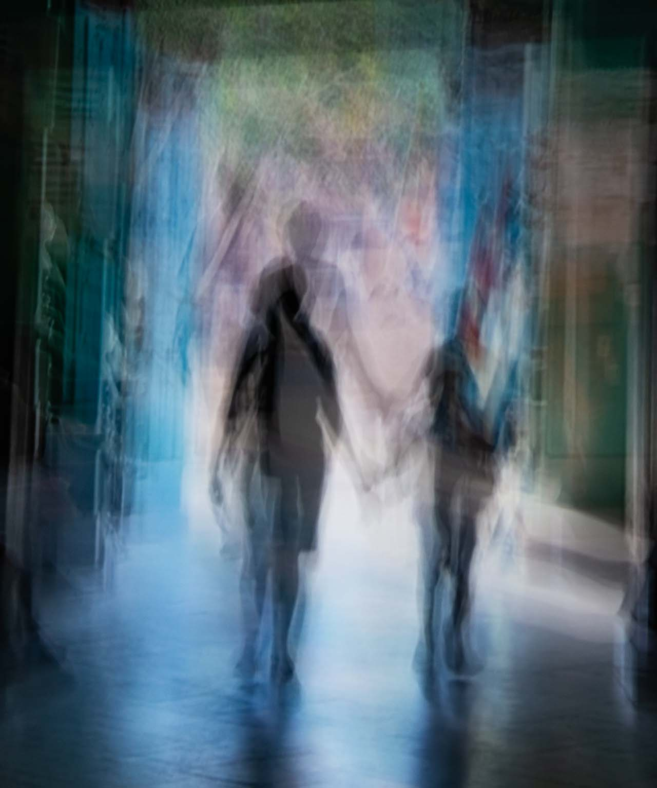
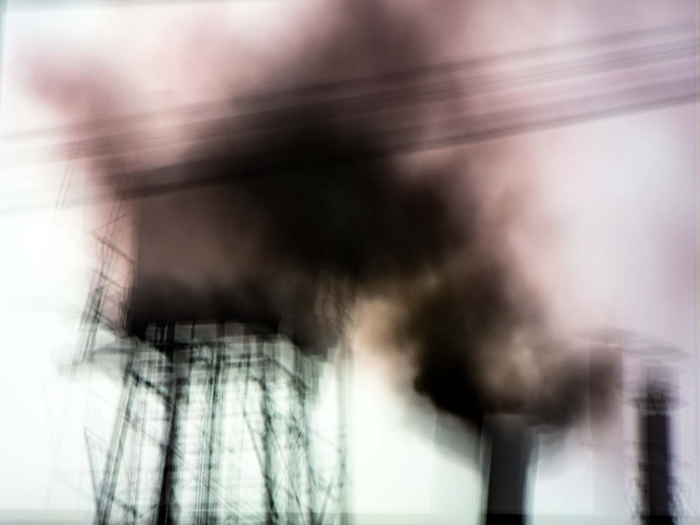
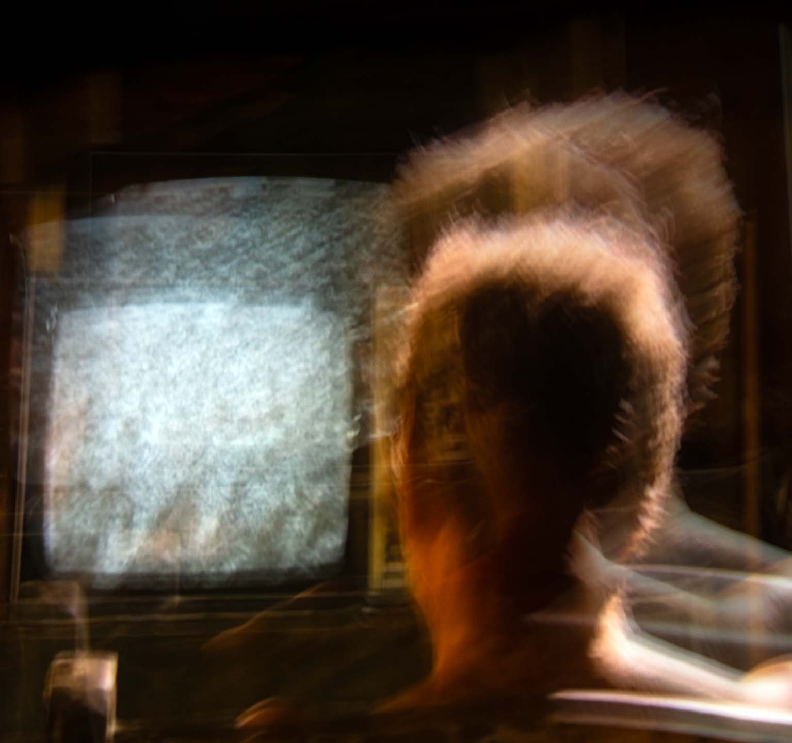
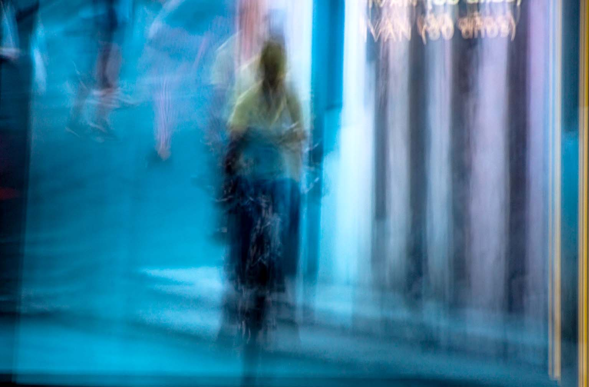
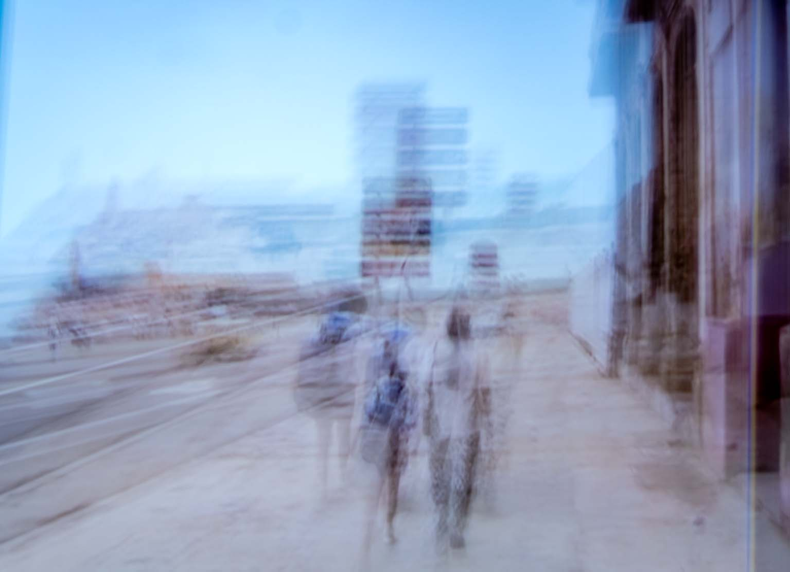

Podemos sorprendernos a nosotros mismos si nos esforzamos al máximo, aceptamos el desafío que tenemos delante y aprendemos a escribir e incorporar la escritura a la fotografía.
Así que este verano empecé con pequeñas incursiones para ver si era capaz de crecer y darle una vuelta a esta disciplina, que tenía abandonada desde hacía tiempo.
Sin ponerme límites, me propuse derribar viejas y falsas creencias para experimentar con lo que estaba haciendo y llevarlo a terrenos distintos y menos agotadores. Combiné textos e imágenes sin detenerme a pensar en nada más.
¿Qué va primero, el texto o la imagen? La historia consiste en comenzar y llenar la mesa de textos e imágenes. La técnica del collage me resultó muy útil para empezar; en mi forma de trabajar hay una persistencia clara en la acumulación de material, lo que me permite crear un caos para comenzar desde cero.
Eso genera muchos errores y fallos de los que se sacan las conclusiones más importantes, basadas en el error y la improvisación de esa aleatoriedad hasta conseguirlo.
Esto requiere mucha concentración y bastantes horas de trabajo; no me resulta fácil controlarlo. En este proceso, el descanso y el no hacer nada son imprescindibles para poder continuarlo.
Llega un momento en que eres consciente de que no avanzas, de que necesitas un descanso y de que no sabes cuánto puede durar.
Es el «parón». Solo lo sabes cuando vuelves y te ves trabajando. Este parón se resuelve con los paseos y la lectura, pero sobre todo con los paseos.
Elegir un paseo sin ruta es imprescindible: «salir para entrar» y «entrar para salir». Siempre se entra o se sale de nuevo; descubrirlo es la culminación de todo. Rousseau lo hizo en la isla de San Pedro y lo describe en el quinto paseo: «El placer de no hacer nada útil ni obligatorio, limitándose a existir y a contemplar la naturaleza».
“Para ser verdaderamente feliz no se necesita riqueza, ni la aprobación de la sociedad, ni grandes lujos. Basta con despojarse de todas las preocupaciones del mundo y centrarse en el presente”.
Al eliminar el pasado —los traumas de sus persecuciones— y el futuro —la ansiedad por lo que vendrá—, queda un vacío que se llena con el simple hecho de respirar y existir. Él lo llama “sentiment de l´existence” (el sentimiento de la existencia).
Se alejaba de la orilla, se tumbaba boca arriba en el fondo de la barca y dejaba que la corriente y el viento la llevaran a la deriva, sin rumbo fijo. A veces pasaba varias horas así.
Como yo…
- I. DURMIENTE Pág. 1
- II. SENTIR Pág. 4
- III. IMAGINA Pág. 7
- IV. ÁNGEL CAÍDO Pág. 10
- V. BUSCAR Pág. 13

La fotografía no ilustra el poema ni el poema le hace la ola a la imagen. Las dos cosas colisionan en ese territorio incómodo donde nadie va a salvarnos el pellejo. Las siluetas se difuminan en una abstracción fantasmal, como si la gente de la calle tratara de borrarse a sí misma para no enterarse de lo que pasa. Al final, lo único que queda flotando en el aire es la pregunta que nos jode todas las treguas: ¿Cómo será esta noche?
Una forma muy seria de no tomarse nada en serio, salvo la supervivencia de andar por casa.
| TÍTULO DE LA OBRA | PROYECTO BULD · DURMIENTE |
| ESTRUCTURA | Obra poético-visual compuesta por texto y Fotografía de Abstracción Urbana |
| CAPTURA Y ÓPTICA | SONY ILCE-6000 (16-50 mm) |
| TÉCNICA FOTOGRÁFICA | Fotografía digital de abstracción por movimiento intencional de cámara |
| SOPORTE & PAPEL | Impresión Giclée sobre papel de algodón de alta durabilidad |
| UBICACIÓN & AÑO | A Coruña, Galicia 2026 |
S E N T I R

En Sentir, la fotografía de la chimenea industrial y el poema no se buscan para explicarse ni para pedirse perdón. La mole de hierro que escupe humo negro y los versos de los que ya no tragan van exactamente al mismo sitio: a registrar una combustión. La imagen pone el aire cargado y la estructura fría; el texto pone los ojos ardiendo de los que se giran de golpe. La colisión entre ambos no busca conmover a nadie, sino dejar constancia de lo que quema cuando ya no queda nada que fingir.
| TÍTULO DE LA OBRA | PROYECTO BULD · SENTIR |
| ESTRUCTURA | Obra poético-visual compuesta por texto y Fotografía de Abstracción Industrial |
| CAPTURA Y ÓPTICA | SONY ILCE-6000 (16-50 mm) |
| TÉCNICA FOTOGRÁFICA | Fotografía digital de abstracción por movimiento intencional de cámara |
| SOPORTE & PAPEL | Impresión Giclée sobre papel de algodón de alta durabilidad |
| UBICACIÓN & AÑO | A Coruña, Galicia 2026 |

En Imagina, la fotografía de esa figura borrosa frente a una pantalla encendida y los versos de la madrugada no se acompañan para quedar bien. La imagen pone la estática, el temblor y las horas perdidas; el texto pone el recuerdo de ver a alguien en silencio, dándole vueltas a lo irremediable. No hay moraleja luminosa ni epifanías de escaparate; solo la constatación tozuda de que a veces lo único que queda por hacer es seguir mirando la pantalla de madrugada.
| TÍTULO DE LA OBRA | PROYECTO BULD · IMAGINA |
| ESTRUCTURA | Obra poético-visual compuesta por texto y Fotografía de Abstracción Doméstica |
| CAPTURA Y ÓPTICA | SONY ILCE-6000 (16-50 mm) |
| TÉCNICA FOTOGRÁFICA | Fotografía digital de abstracción por movimiento intencional de cámara |
| SOPORTE & PAPEL | Impresión Giclée sobre papel de algodón de alta durabilidad |
| UBICACIÓN & AÑO | A Coruña, Galicia 2026 |

En Ángel caído, la fotografía del ciclista y el poema no se buscan para darse la razón ni para adornarse mutuamente. La imagen pone el asfalto borroso y el pulso de ir a contracorriente; el texto pone la resaca de los silencios largos y la extraña certeza de estar demasiado metido en el atolladero como para rectificar a tiempo. Cero moralejas y cero aspavientos; solo queda el retrato escéptico de alguien que sigue en la bicicleta y prefiere pedalear antes que dar explicaciones.
| TÍTULO DE LA OBRA | PROYECTO BULD · ÁNGEL CAÍDO |
| ESTRUCTURA | Obra poético-visual compuesta por texto y Fotografía de Abstracción Urbana |
| CAPTURA Y ÓPTICA | SONY ILCE-6000 (16-50 mm) |
| TÉCNICA FOTOGRÁFICA | Fotografía digital de abstracción por movimiento intencional de cámara |
| SOPORTE & PAPEL | Impresión Giclée sobre papel de algodón de alta durabilidad |
| UBICACIÓN & AÑO | A Coruña, Galicia 2026 |

En Buscar, la fotografía de esas siluetas borrosas caminando bajo un cielo plomizo y los versos del desencanto van directos al grano. La imagen pone la luz fría, los carteles superpuestos y la sensación de andar perdido en tu propia ciudad; el texto pone la sorna de quien se da cuenta de que la nostalgia es una pérdida de tiempo. Al final, tirar por la borda todo lo que pesa y dejar que el olvido limpie el paisaje resulta ser el único truco que de verdad nos quita años de encima.
| TÍTULO DE LA OBRA | PROYECTO BULD · BUSCAR |
| ESTRUCTURA | Obra poético-visual compuesta por texto y Fotografía de Abstracción Urbana |
| CAPTURA Y ÓPTICA | SONY ILCE-6000 (16-50 mm) |
| TÉCNICA FOTOGRÁFICA | Fotografía digital de abstracción por movimiento intencional de cámara |
| SOPORTE & PAPEL | Impresión Giclée sobre papel de algodón de alta durabilidad |
| UBICACIÓN & AÑO | A Coruña, Galicia 2026 |